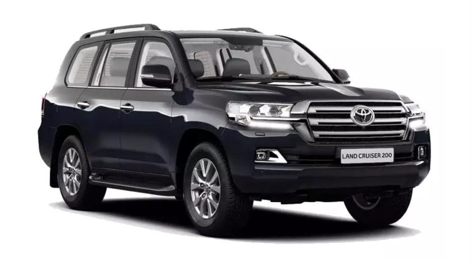

Toyota Land Cruiser

Toyota Land Cruiser — легендарный полноразмерный внедорожник, выпускаемый японской компанией Toyota с 1951 года.
Модель заслужила репутацию одного из самых надежных и долговечных автомобилей в мире, способного работать
в самых экстремальных условиях.
Land Cruiser стал символом безотказности и проходимости. Его можно встретить в самых отдаленных уголках
планеты - от африканских саванн до сибирской тайги. Везде, где нужна абсолютная надежность, выбирают Land Cruiser.
Эволюция поколений
- Toyota BJ/J20 (1951-1955) - первое поколение, созданное для военных нужд
- 20 Series (1955-1960) - первый гражданский Land Cruiser
- 40 Series (1960-1984) - классический дизайн, ставший иконой
- 55 Series (1967-1980) - первый Station Wagon
- 60 Series (1980-1990) - переход к большей роскоши и комфорту
- 80 Series (1990-1997) - современные технологии и повышенная безопасность
- 100 Series (1998-2007) - независимая передняя подвеска, новый уровень комфорта
- 200 Series (2007-2021) - сочетание роскоши и внедорожных качеств
- 300 Series (2021-настоящее время) - новая платформа TNGA, современные технологии
Интересные факты
- Land Cruiser занимает первое место в рейтинге автомобилей, которые чаще всего преодолевают отметку
в 400 000 км пробега без капитального ремонта
- В Австралии Land Cruiser является основным транспортным средством для многих фермеров и часто
используется для буксировки тяжелых прицепов на огромные расстояния
- ООН и многие гуманитарные организации используют Land Cruiser в своих миссиях по всему миру
благодаря их надежности
- В 2021 году была представлена 300-я серия с совершенно новой платформой TNGA, что значительно
улучшило ходовые качества и безопасность при сохранении легендарной проходимости
- Toyota Land Cruiser — это не просто автомобиль, а настоящая легенда, доказавшая свою надежность
в самых суровых условиях по всему миру. Сочетание долговечности, проходимости и комфорта делает
его одним из самых уважаемых внедорожников в истории автопрома.